Chrysler Palomar
I am Chrysler and take a look at my online portfolio. Here at my portfolio, I showcased the activities I have accomplished throughout taking the System Administration 2 Course. This includes different topics and learnings, please navigate through tabs to learn for more.
Hands-On Activity 1.1
This module is about understanding the DevOps culture. We created three Ubuntu virtual machines which are the workstation, server1, and server 2 and then we set up the ssh with its prerequisite configurations such as editing the /etc/hostname and /etc/hosts file. In the end of the activity, I learned how to use the hostname instead of IP address in SSH commands.
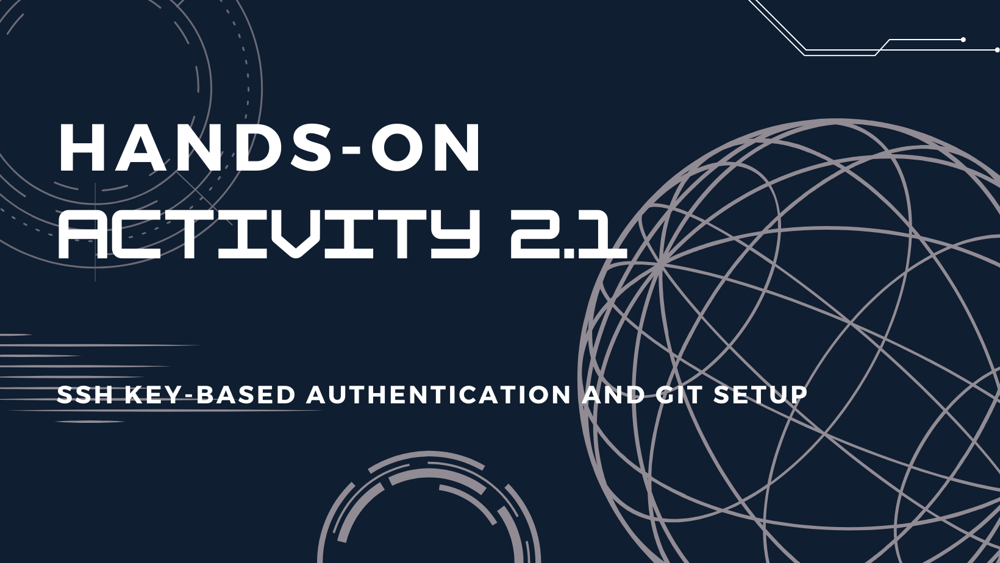
Hands-On Activity 2.1
This module tackles SSH key-based authentication. We configure the remote, and local machines to connect via SSH using KEY instead of using a password. We also set up the Git repository using local and remote repositories, and lastly, we configure and run ad hoc commands from local machines to remote servers. At the end of the activity, I learned how to describe ssh-program, and what does it. In addition, I learned how to check if the public key is already installed in the remote servers, also I learned what is the importance of the inventory file.
Hands-On Activity 3.1
This module is about installing SSH Server on CentOS. Community Enterprise Operating System or CentOS is another Unix operating system that was introduced in this module. The specific version we installed is RHEL 7. In this module, I learned to differentiate Red Hat from Debian. In addition, I learned that there are different factors in choosing between the Debian and Red Hat Linux distributions.
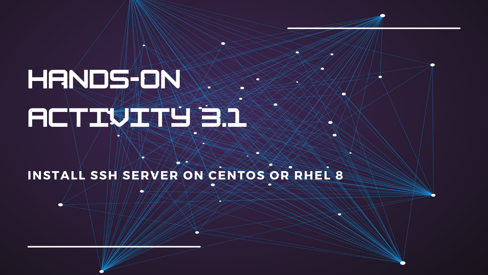
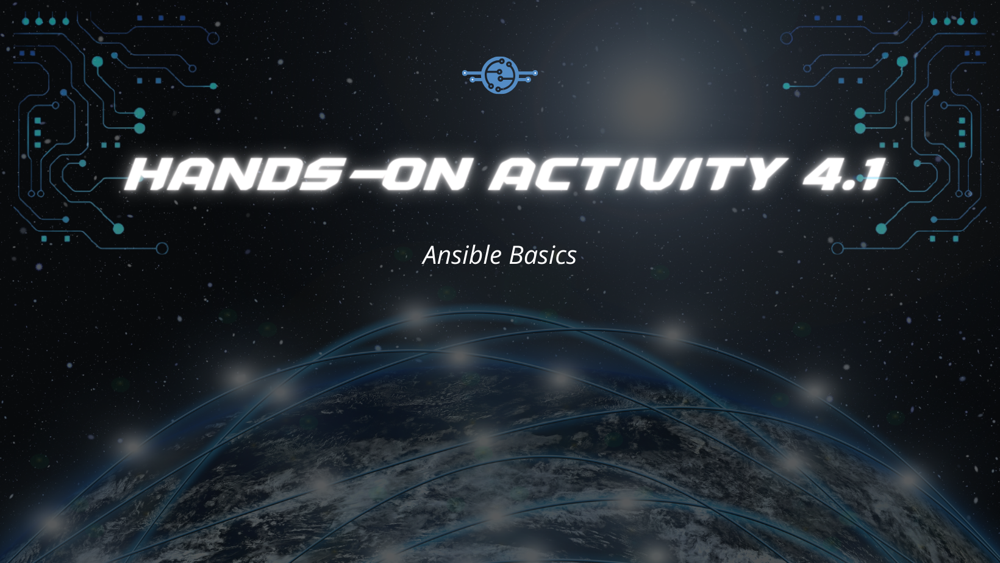
Hands-On Activity 4.1
This module tackles the introduction to Ansible. Discussions in this module include what is Ansible, what is an Ansible inventory, what is an Ansible playbook, and what are the Ansible modules. At the end of the module, I learned what is the importance if using the playbook in system administration.
Hands-On Activity 5.1
This module tackles creating roles in Ansible. In this module, we describe how to create roles and consolidate plays in Ansible, also we created roles, Ansible configurations, inventory files, and ran a playbook. At the end of the module, I learned the importance of refactoring the playbook, and also what is the use and how to use the 'when' command in the playbook.
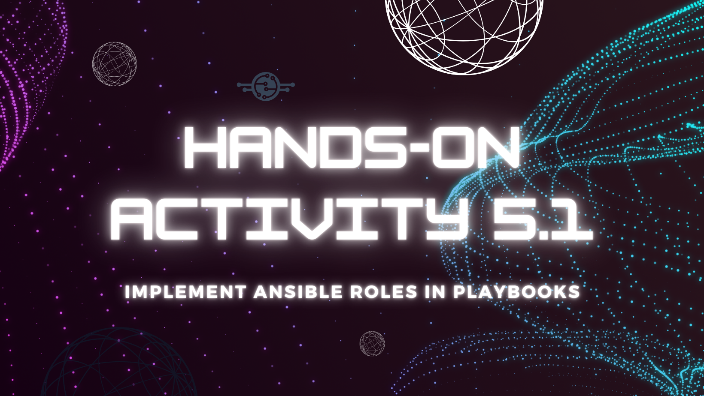
Prelim Examination
In this skills examination, we were tasked to install the latest python3 and pip3, then assign pip3 as default pip, then assign python3 s default python, install java, create a MOTD, and create a user to remote machines, everything using the ansible playbook.
Hands-On Activity 6.1
This module focuses on discussing managing services. In this module, we evaluate the different workload services ranging from web services to relational, and translational databases. Also, we evaluated the different standard workload services with the Ansible as documentation and execution. At the end of this module, I learned the importance of creating groups of remote servers in the inventory file. Also, I learned the importance of tags in the playbook and why is it necessary for some services to be managed automatically in the playbook.
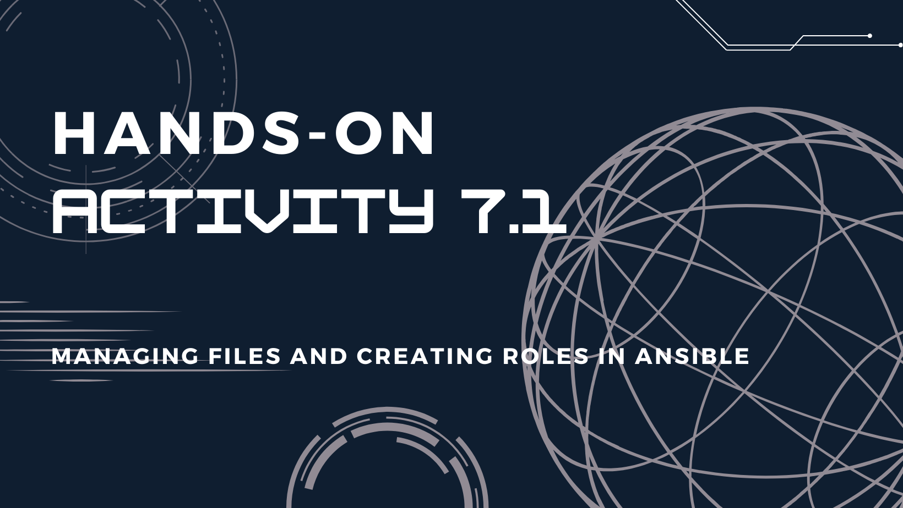
Hands-On Activity 7.1
This module is about managing files and creating roles in Ansible. In this module, we discussed how the ansible file module works. At the end of this module, I learned the importance of creating roles and managing the files.
Hands-On Activity 8.1
This module is about installing, configuring, and managing availability monitoring tools. In this module, we created and designed workflows to install, configure, and manage availability monitoring tools using the Ansible to document and execute. At the end of this module, I learned the benefits of having an availability tool in system administration.
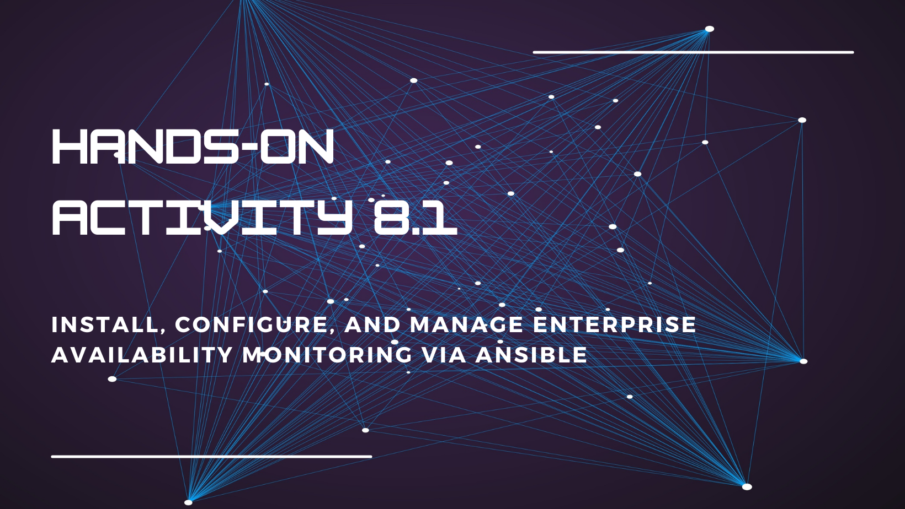
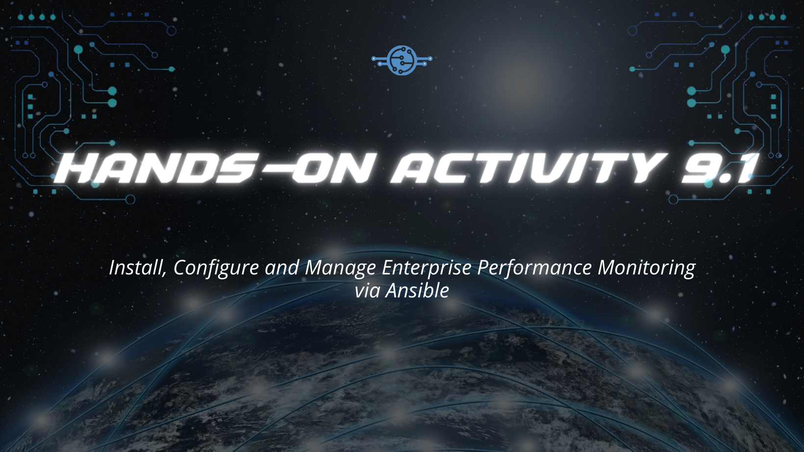
Hands-On Activity 9.1
This module is about installing, configuring, and managing performance monitoring tools. In this module, we created and designed workflows to install, configure, and manage performance monitoring tools using the ansible to document and execute. At the end of this module, I learned the benefits of having a performance monitoring tool.
Hands-On Activity 10.1
This module is about installing, configuring, and managing log monitoring tools. In this module, we created, and designed workflows to install, cnfigure, and manage log monitoring tools using the ansible to document and execute. At the end of this module, I learned the benefits of having log monitoring tools.
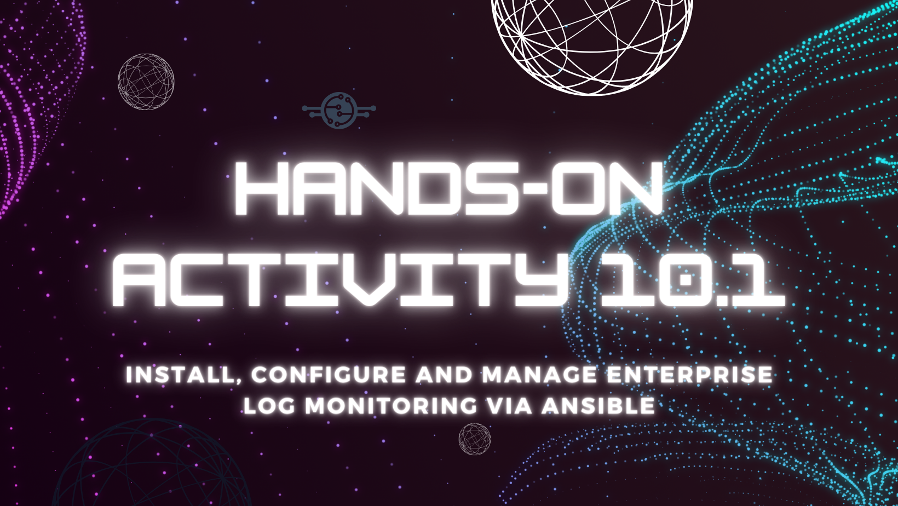
Midterm Examination
In this skills examination, we were tasked to install and configure Elastic Stack services such as Elastic Search, Kibana, and Logstash. Also, we were tasked to install Grafana, Prometheus, InfluxDB, MariaDB, and Httpd+PHP to remote machines using the Ansible playbook.
Hands-On Activity 11.1
This module is about configuring and managing a containerized environment. In this module, we discussed the difference between Containerization vs Virtualization, as well as Docker as container technology. We analyzed docker file composition and how to apply it in real work scenarios, also we created and designed a workflow for a containerized service using the Ansible. Lastly, we evaluated the containerization tools and used the best for each. At the end of this module, I learned the benefits of implementing containerizations.
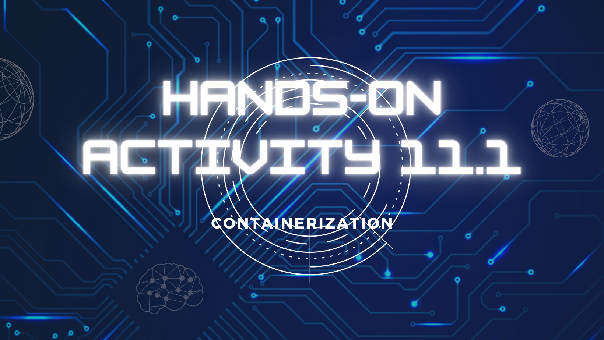
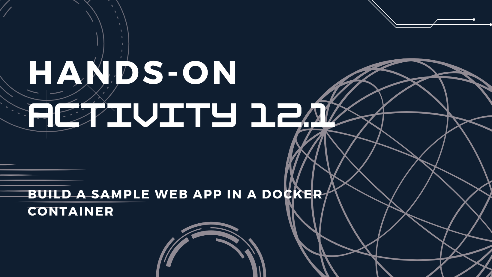
Hands-On Activity 12.1
This module is about building an app in containers. We discussed dockerizing an application, we analyzed docker file composition and how to apply it in real-world scenarios, we created and designed a workflow for a containerized service using Ansible, and we evaluated the containerization tools and used the best for each. At the end of the module, I learned a lot of new things as I could work with DevOps for the first time that is associated with Cisco Networking Academy.
Hands-On Activity 13.1
This module talks about cloud services. We discussed the cloud computing service models, as well as the cloud computing deployment models. OpenStack was introduced to us and public clouds are tackled as well. We analyzed the advantages and disadvantages of cloud services, then we evaluated the different cloud deployment and service models. Also, we created a workflow to install and configure OpenStack-based services using the ansible as documentation and execution. At the end of the module, I learned the benefits of implementing the OpenStack.
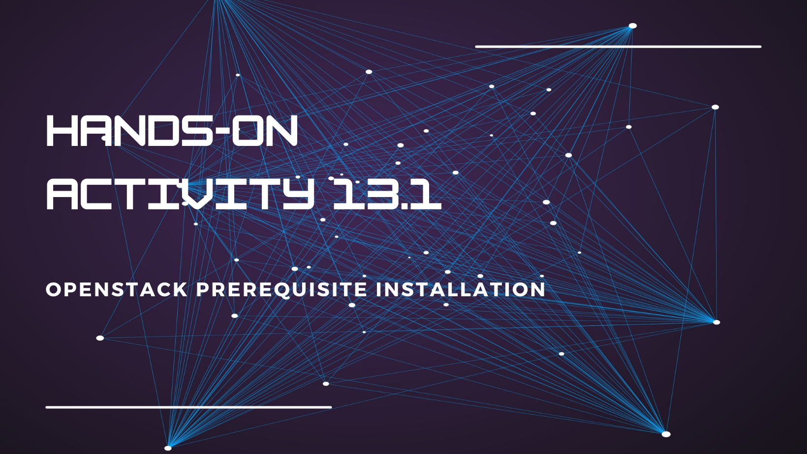
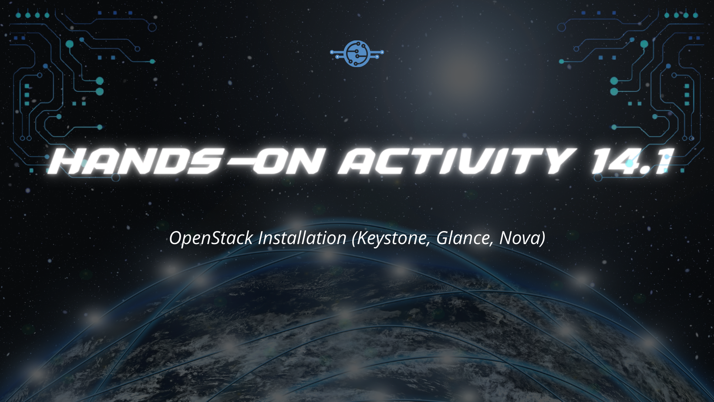
Hands-On Activity 14.1
This module tackles the cloud services OpenStack installation. We analyzed the advantages and disadvantages of cloud services, then we evaluated the different cloud deployment and service models. Also, we created a workflow to install and configure OpenStack-based services using the ansible as documentation and execution. At the end of this module, I learned how to describe the Keystone, Glance, and Nova services of OpenStack.
Hands-On Activity 15.1
This module tackles the installation of certain OpenStack services, particularly the Neutron, Horizon, and Cinder. We analyzed the advantages and disadvantages of cloud services, then we evaluated the different cloud deployment and service models. Also, we created a workflow to install and configure OpenStack-based services using the ansible as documentation and execution. At the end of this module, I learned how to describe the Neutron, Horizon, and Cinder services.

Final Examination
In this final examination, we were simply tasked to make an HTML website through Github to compile all of the previous activities' GitHub repositories. At the end of this examination, I can learn some new elements of HTML.